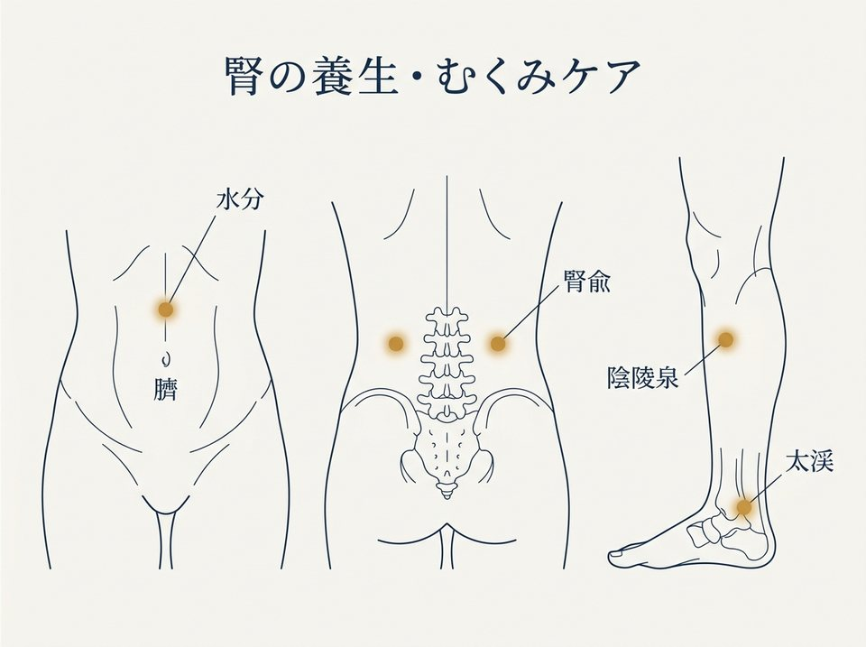

ネイルパテラ症候群の鍼灸
爪や膝蓋骨・肘の形成異常と腎症・緑内障を伴う指定難病です。専門医管理を最優先に、関節周囲の負担と体調を優しく支えます。


院長YouTube解説・関連動画
公開日：２０２２年 １月 ２日
更新日：２０２３年 １月 ８日
本日はネイルパテラ症候群について解説させていただきます。
☆本記事の内容
- •ネイルパテラ症候群とは
- •ネイルパテラ症候群の原因
- •ネイルパテラ症候群の症状
- •ネイルパテラ症候群の改善方法
- •ネイルパテラ症候群のまとめ
- •ネイルパテラ症候群は、４つの特徴がある病気
- •ネイルパテラ症候群の原因は、LMX1Bという遺伝子の異常
- •爪の異常はほとんどの人に現れる
- •ネイルパテラ症候群の改善では現れている症状に対して改善を行う
- •きちんと調べて改善に取り組んでいくことが大事
銀座そうぜん鍼灸院の宗前です。
このページを書いている私は、鍼灸師として１３年、担当した利用者様数８０，０００人を誇り、病気の休職者３００人を社会復帰できるまで回復させてきた実績があります。
爪の異常はほとんどの人に現れる
ネイルパテラ症候群の症状の特徴は、爪の形の異常、肘関節の変形、膝蓋骨の異常、腸骨の突起の４つです。４つの全ての症状が現れるとは限りません。症状は１つだけ現れることもあればいくつか現れることもあります。
爪の形の異常や膝蓋骨がないなどの膝の異常、肘関節の運動制限などが現れます。レントゲンで見ると、腸骨に突起が見られることも多いです。
特徴となる症状は全て起こるわけではありませんが、爪の異常はほとんどの人に現れます。
緑内障や眼圧亢進が現れることも多いです。緑内障や眼圧亢進は一般的に発症するより若い年代で現れます。
半分の人は、腎臓の病気を合併し、蛋白尿や血尿が現れます。場合によっては、蛋白尿が高度であったり腎機能が悪化し末期腎不全が起こることもあります。
ネイルパテラ症候群は、遺伝的に決定される多様な症状を特徴とする病気です。この症候群の主な症状は以下の通りです。
爪の異常：爪が小さく、薄く、または異常な形をしている場合が多い。一部の爪、特に親指の爪に影響が見られることが一般的です。重度の場合、爪が完全に欠如していることもあります。
膝蓋骨（パテラ）の異常：膝蓋骨が小さく、発育不全、または完全に欠如している場合があります。これにより、膝の不安定性や膝の痛み、歩行障害が生じることがあります。
肘関節の問題：肘関節の可動域が限られている場合が多く、肘を伸ばすことが困難なことがあります。
骨の異常：腰椎や骨盤の骨に特徴的な突起が見られることがあります。この症状はX線検査で特に顕著に見られます。
腎臓の問題：腎不全や蛋白尿など、腎臓の障害を伴うことがあります。腎臓の問題は症候群の重篤な合併症の一つであり、定期的なモニタリングが必要です。
眼の問題：緑内障のリスクが高まることがあります。定期的に眼科に行くことが推奨されます。
これらの症状は個人差が大きく、軽度から重度まで様々です。
ネイルパテラ症候群の改善では、現れている症状に対して改善を行うことになります。爪や膝、肘関節の異常に対して根本的に改善するための方法はありません。
鎮痛薬を使ったり装具をつけたりすることが必要になることも多いです。関節症状や緑内障などの症状が現れている場合、改善のために手術を行うこともあります。
腎症がある場合は、腎機能に合わせて改善に取り組みます。
ネイルパテラ症候群の改善では、主に症状の管理と機能の改善に焦点を当てています。現在、ネイルパテラ症候群を根本的に改善する方法はありませんが、以下のような症状に対する対処を行います。
整形外科：膝蓋骨の異常や膝関節の不安定性に対する整形外科的な方法が必要な場合があります。これには、膝蓋骨の位置の調整や関節安定化手術が含まれることがあります。肘関節の可動域制限に対する改善も必要な場合があります。
理学的な方法：関節の可動域を維持し、筋力を強化するための理学的な方法が推奨されます。特に膝関節の安定性を高めるための運動が有効です。
腎臓のモニタリング：腎機能の問題が見られる場合、定期的な腎機能のモニタリングが重要です。腎臓病の進行に応じて、薬物治療や最終的には透析や腎移植が必要になることもあります。
眼科的評価：緑内障のリスクがあるため、定期的に眼科に行くことが推奨されます。緑内障が診断された場合は、適切な眼科的な改善が必要になります。
歯科的管理：歯の異常がある場合、歯科的な評価と改善が必要です。
遺伝カウンセリング：ネイルパテラ症候群は遺伝的な病気であるため、本人や家族に対する遺伝カウンセリングが推奨されます。
心理的サポート：体の外見に関する自己意識や他の精神的な問題に対して、心理的サポートが必要な場合があります。
症状や健康状態によって改善の計画は異なります。一人ひとりに合わせた個別の計画の作成と、継続的なフォローアップが重要です。
ネイルパテラ症候群に特有の薬は存在しませんが、この症候群に伴う特定の症状や合併症を管理するために、以下のような薬剤が使用されることがあります。
疼痛管理のための薬剤：関節痛やその他の痛みに対して、非ステロイド性抗炎症薬（NSAIDs）が処方されることがあります。
例：イブプロフェン、ナプロキセン。
緑内障の薬：ネイルパテラ症候群が緑内障を発症した場合、眼圧を低下させるための点眼薬や経口薬が使用されます。
例：プロスタグランジン類似薬（ラタノプロスト）、β遮断薬（ティモロール）。
腎臓病の薬：腎機能の問題がある場合、血圧を下げる薬や蛋白尿を減少させる薬が処方されることがあります。
例：ACE阻害薬（リシノプリル）、アンジオテンシン受容体拮抗薬（ロサルタン）。
理学的方法の補助としての筋弛緩剤：筋肉の緊張やけいれんを緩和するために、筋弛緩剤が使用されることがあります。
例：シクロベンザプリン。
これらの薬剤は、症状や健康状態に応じて、医師によって慎重に選択されます。ネイルパテラ症候群の改善は、生活の質の向上と症状の緩和を目的としています。定期的なフォローアップと、関連する合併症に対する注意が重要です。
関節の異常がある場合、運動をする時の制限が必要になることがあります。半分の人は腎臓病を合併するため、合併しているかどうかを調べるために定期的に尿を調べることも必要になります。
尿を調べて異常が見つかった場合は腎臓の機能についても定期的に調べることが必要になります。症状の程度や現れる症状は人によって様々であるため、きちんと調べて改善に取り組んでいくことが大事です。
▼ 詳しく知りたい項目だけタップして開けます（全項目の医学解説を収録）
01. 原因とメカニズム
なぜ症状が起きるのか・鍼灸の作用機序を読む
▼
01. 原因とメカニズム
なぜ症状が起きるのか・鍼灸の作用機序を読む
ネイルパテラ症候群（爪膝蓋骨症候群）は、LMX1B遺伝子の変異によって起こる希少な常染色体優性遺伝疾患です。爪の形成異常、膝蓋骨の低形成・欠損、肘関節の変形、腸骨角の4大特徴に加え、約半数に蛋白尿や血尿を伴う腎症が発症し末期腎不全へ進行する場合があります。早期発症の緑内障も合併しやすく、腎臓科・整形外科・眼科の継続的な連携管理が必要です。
なぜ鍼灸で改善へ向かうのか？（作用機序の図解）
ネイルパテラ症候群に対する鍼灸は、仙髄排尿反射（陰部神経）と骨盤底の協調調整機序を通じて、お体本来の回復力を引き出します。
膀胱・尿道括約筋を支配する仙髄神経（S2〜S4）領域の経穴へ的確にアプローチします。
弱まった骨盤底筋の収縮サポートと、過敏になった膀胱排尿筋の鎮静をバランスよく促します。
腰殿部と下腹部の血流を高め、冷えや過緊張による頻尿・違和感・痛みを和らげます。
泌尿器科の評価やセルフエクササイズと併用し、安心して外出できる日常の回復を支えます。
02. よくあるお悩み
このような症状はありませんか？（4項目）
▼
02. よくあるお悩み
このような症状はありませんか？（4項目）
- ✓生まれつき爪の低形成や膝のお皿が小さい・ない特徴がある
- ✓膝の不安定感や痛み、肘が伸びにくいことによる周囲のこりがある
- ✓定期検査で蛋白尿や血尿などの腎症の経過観察を続けている
- ✓緑内障や高眼圧症の定期チェックと日々の疲労に悩んでいる
03. 当院の施術アプローチ
施術の進め方・改善のポイントを見る
▼
03. 当院の施術アプローチ
施術の進め方・改善のポイントを見る
04. ツボ詳細・セルフケア一覧
腎・泌尿器・排尿トラブル・透析サポートのツボ図解（6穴）
▼
04. ツボ詳細・セルフケア一覧
腎・泌尿器・排尿トラブル・透析サポートのツボ図解（6穴）
実際の施術ではお一人おひとりの体質・症状に合わせて選穴しますが、過活動膀胱・尿失禁・前立腺症状・CKD/透析QOLの標準治療併用ケアの臨床でよく用いられる代表的なツボの目安です。
| ツボ名 | 位置の目安 | 主な狙い | セルフケアの注意点 |
|---|---|---|---|
| 腎兪（じんゆ） | 腰のくびれの高さ、背骨から指2本分外側 | 腎・泌尿器周囲の自律神経と冷え・倦怠感ケア | 腰部を温めることで夜間頻尿の負担も和らぎます。 |
| 次髎（じりょう） | 仙骨の2番目のくぼみ（お尻の上中央付近） | 仙髄排尿神経（S2〜S4）を介した膀胱機能調整の最重要穴 | 腹圧性・切迫性尿失禁や過活動膀胱の国際RCTでも定番です。 |
| 関元（かんげん） | おへそから指4本分下 | 下腹部の冷え改善・骨盤内の循環サポート | 排尿を済ませた状態で優しく温めます。 |
| 中極（ちゅうきょく） | 恥骨のすぐ上、おへそから指5本分下 | 膀胱の過敏性・残尿感・頻尿の調整 | 強く押し込まず軽く手を当てる・温める程度にします。 |
| 三陰交（さんいんこう） | 内くるぶしの上から指4本分上 | 脛骨神経を介した膀胱過活動の鎮静・睡眠の質改善 | 透析中の方はシャント腕を避け非透析日に安全に行います。 |
| 太渓（たいけい） | 内くるぶしとアキレス腱の間 | 腎経の原穴として冷え・むくみ・夜間頻尿の土台づくり | 足首を冷やさない工夫と合わせてケアします。 |
05. 医学的根拠・国際査読論文（PubMed / Cochrane）
科学的エビデンス・出典リンク一覧（2件）
▼
05. 医学的根拠・国際査読論文（PubMed / Cochrane）
科学的エビデンス・出典リンク一覧（2件）
国際的な医学データベース（PubMed・Cochrane等）で報告されている頻尿・過活動膀胱・夜間頻尿領域の代表的な査読済み鍼灸研究をまとめています（標準治療との併用や研究上の限界を含めて正確に掲載）。
| 年・研究デザイン | 対象・規模 | 主な結果 | 限界・出典 |
|---|---|---|---|
| 2022年 Cochraneレビュー | 過活動膀胱 15研究（n=1,395） | シャム鍼比で頻尿・尿意切迫感の改善可能性を報告。 | 薬物療法と同等かは不確実で泌尿器科評価が前提。 Cochrane (PMID: 36148895) |
| 2023年 メタ解析 | 過活動膀胱 30研究統合 | 排尿回数・切迫感スコアの改善傾向を示唆。 | 研究間の異質性が高い。 Front Neurol (PMID: 36712423) |
参考文献・出典
- 2022年 Cochraneレビュー（過活動膀胱 15研究（n=1,395））— Cochrane (PMID: 36148895)
- 2023年 メタ解析（過活動膀胱 30研究統合）— Front Neurol (PMID: 36712423)
06. よくある質問（FAQ）
よくあるご質問を見る（2件）
▼
06. よくある質問（FAQ）
よくあるご質問を見る（2件）
Q. 膝や肘の変形そのものを鍼灸で治すことはできますか？
骨や関節の構造的な形成異常を鍼灸で変えることはできません。整形外科での専門管理を基本とし、当院では関節をかばって硬くなった周囲の筋肉の張りや疲労感を優しく緩めます。
Q. 腎症がある場合でも施術を受けられますか？
主治医の許可があり検査値が安定している時期であれば、腎部への強い刺激を避けた安全な範囲で全身のコンディショニングをお手伝いできます。
あわせて読まれる関連疾患（泌尿器のお悩み）
腎臓の糸球体に異常なIgAが沈着して炎症が続く指定難病です。腎臓専門医の管理を最優先に、安定期の体調維持を優しく支えます。
フェニルアラニン代謝酵素の不足による指定難病です。生涯の低フェニルアラニン食と専門医管理を最優先に安定期の心身を支えます。
分岐鎖アミノ酸の代謝障害により尿に甘い臭いが生じる指定難病です。厳格な食事療法と専門医管理を最優先に安定期を支えます。
アンモニアを尿素へ変換する酵素が生まれつき不足する指定難病です。専門医の食事・薬物管理を最優先に安定期の体調を支えます。
アミノ酸代謝酵素の欠損によりホモシスチンが蓄積する指定難病です。専門医の食事・薬物管理を最優先に安定期の体調を支えます。
IV型コラーゲン異常により腎炎・難聴・眼症状を伴う遺伝性の指定難病です。専門医管理を最優先に安定期の体調を支えます。
CLINICAL RECOVERY CASES
✨ 実際の臨床改善事例・回復経過を見る
銀座本院をはじめ各院での実際の改善事例を症状別に絞り込んでご確認いただけます。
おひとりで悩まず、まずはご相談ください
銀座本院・川口・大宮・横浜・博多・田無の各院でご予約を承っております。